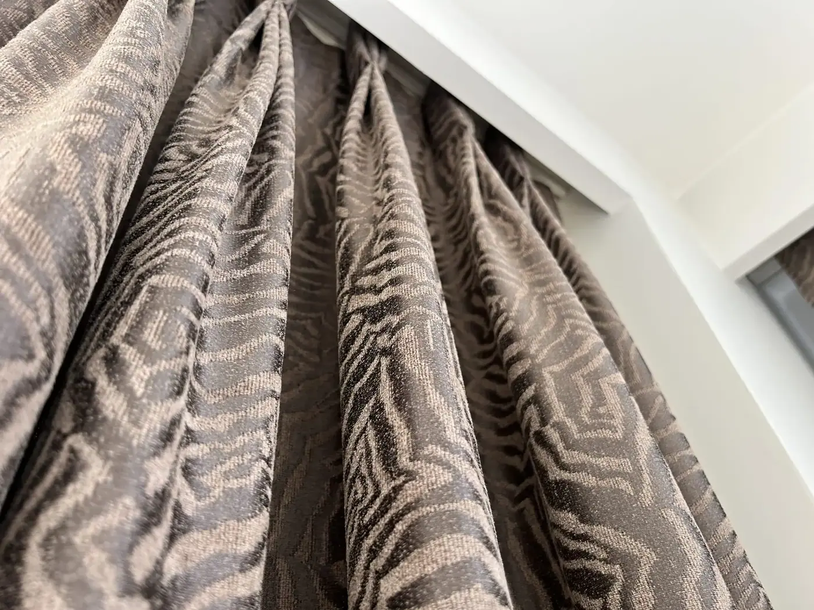
Pencere
Perde Sistemleri
Pencerenin ışığını, sesini ve mahremiyetini ayarlayan katman. Ölçü, dikim ve montaj tek elden.
Bey Perde · 2017'den beri Çekmeköy
Perde, duvar kağıdı ve halı. Ölçüden üretime, montajdan bakıma; ev, villa ve proje işleri tek elden.
Perde bir dekorasyon detayı değil, mekânın ışığını yöneten parçadır. Biz de işe hep ışıktan başlıyoruz.
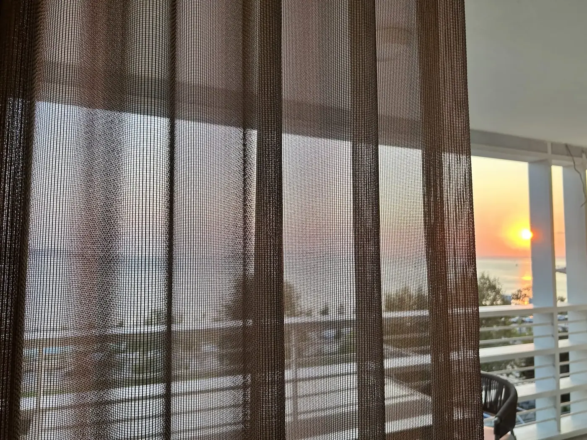
Ürünler
Pencere, duvar ve zemin. Perdeyi, duvar kağıdını ve halıyı ayrı ayrı değil, birlikte düşünüyoruz; üçünü de aynı ekip, aynı özenle tamamlar.

Pencere
Pencerenin ışığını, sesini ve mahremiyetini ayarlayan katman. Ölçü, dikim ve montaj tek elden.
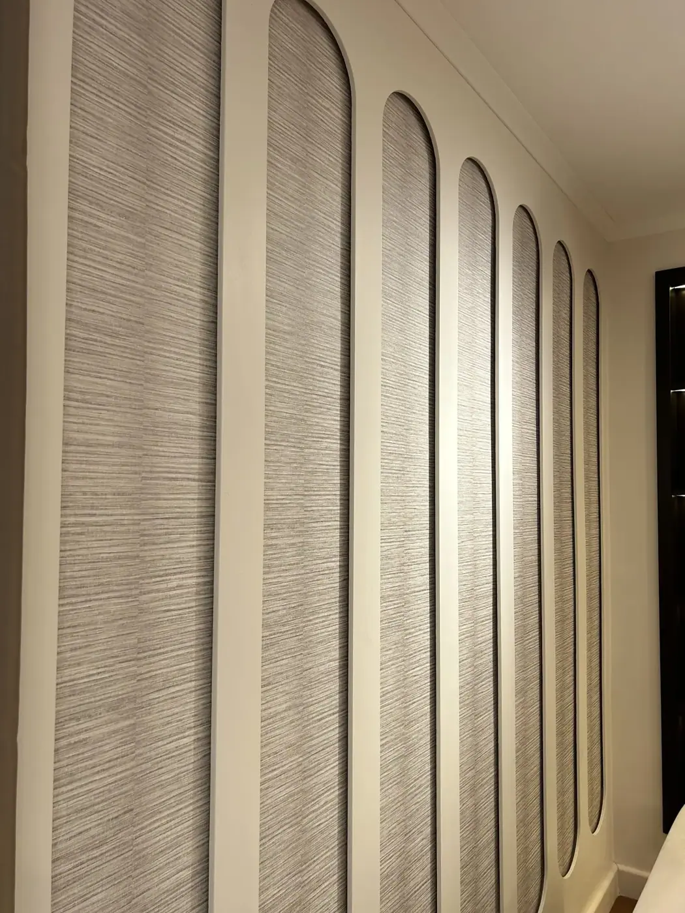
Duvar
Duvarın dokusu. Tekstilden vinile, non-woven tabandan dijital baskıya.
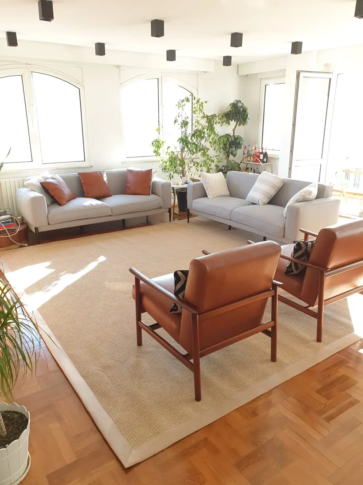
Zemin
Zeminin sıcaklığı ve sesi. Sisal, el dokuma ve özel ölçü.
Pencere
Tül ve fon perdeden motorlu sistemlere; seçtiğiniz kumaş kendi atölyemizde, pencerenizin ölçüsüne göre dikilir.

Gün ışığını süzen ince kumaş; mahremiyeti korurken odayı aydınlık tutar.

Pencereyi çerçeveleyen kalın kumaş; karartma ve ısı yalıtımı seçenekleriyle.
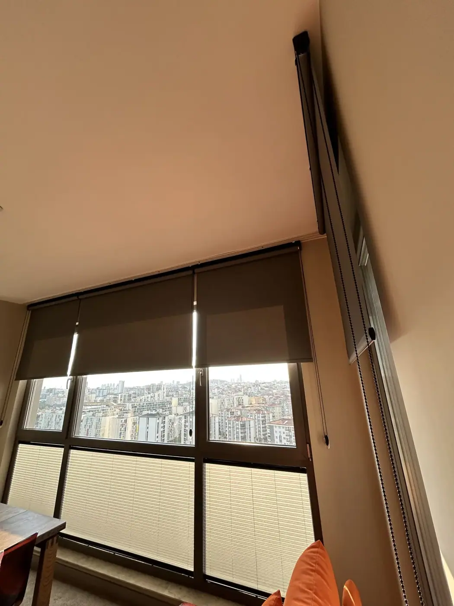
Tek parça kumaş rulo hâlinde toplanır; zebra seçeneğiyle kademeli ışık.
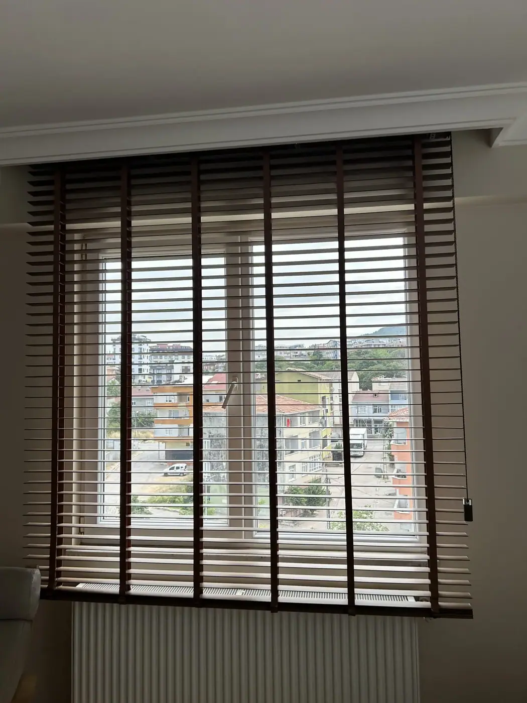
Yatay kanatlar; ışığı açısını değiştirerek yönlendirir.
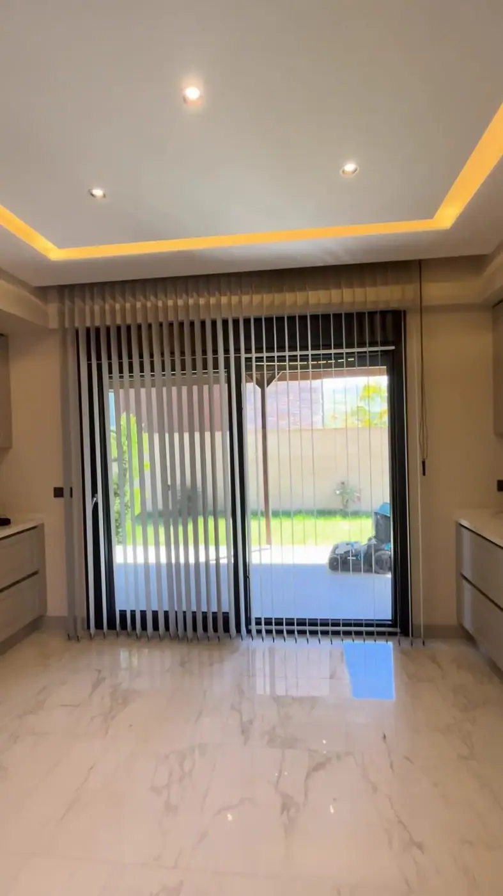
Dikey bantlar döner ve yana toplanır; geniş camlar ve ofisler için.
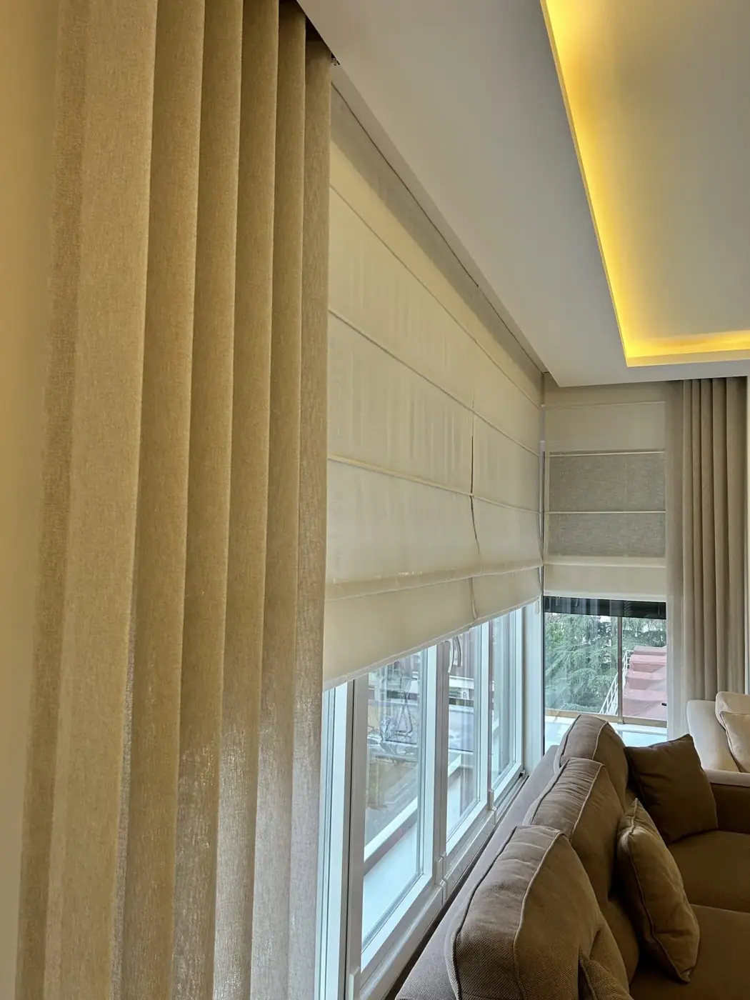
Yukarı toplandıkça düzgün katlar oluşturan sade duruş.
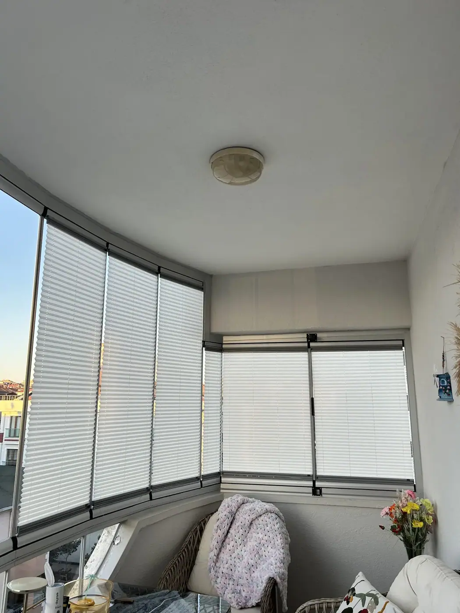
Petek yapısı ısıyı tutar; dar ve alışılmadık ölçülerde çalışır.

Kumanda ya da telefonla; geniş cepheler ve ulaşılması zor pencereler için.

Ahşap ya da metal boru üzerinde halkalı, klasik kurulum.

Dekoratif ray, korniş ve rustik boru; tutucu, püskül ve motor donanımları.

Öne çıkan · Rustik Perde
Ray tavanda gizlenirken rustik boru göz önündedir; uç başlıkları ve rengiyle odanın bir parçası olur. Bu yüzden kumaş kadar borunun malzemesine, kalınlığına ve tonuna da birlikte karar veririz.
Başlığı seçin
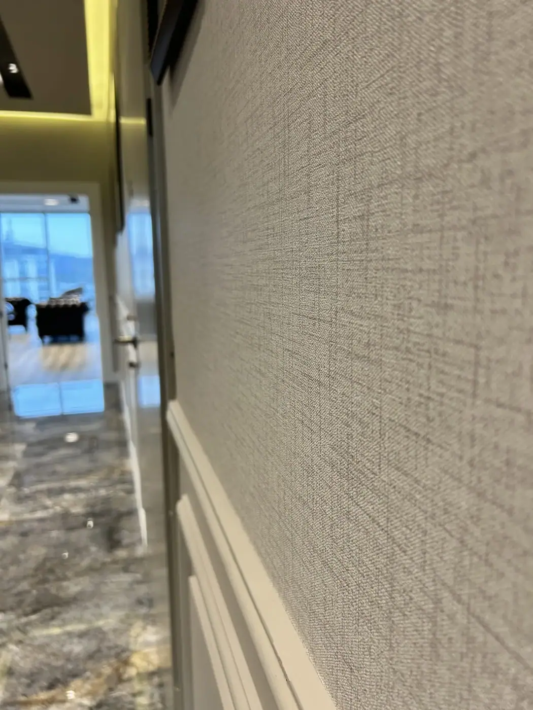
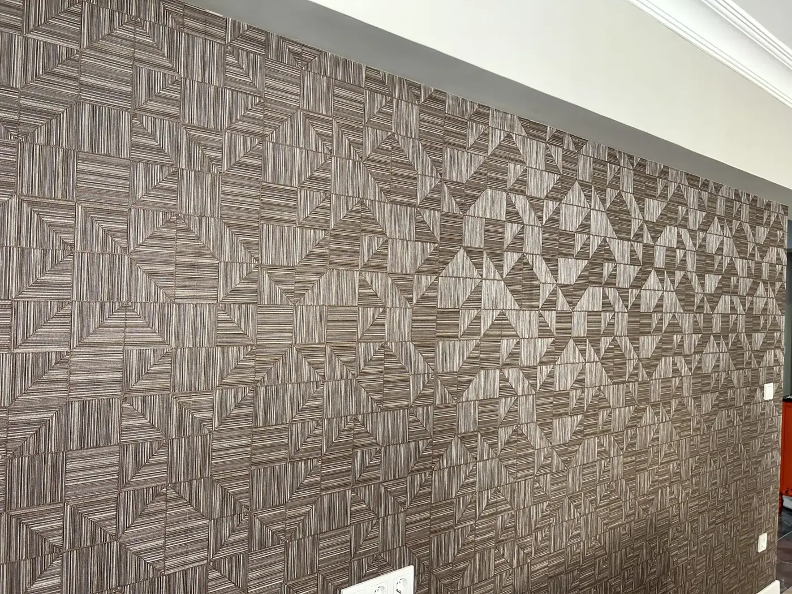
Duvar
Tekstil duvar kağıdı duvara boyanın ya da baskının veremeyeceği bir derinlik katar; ışık, kumaşın lifleri üzerinde yumuşakça dağılır, oda hem göze hem kulağa daha sakin gelir.
Projeler
Her projenin fotoğrafları ve fotoğraf altı bilgilendirmeleri kendi sayfasında.

Pencereleri tavandan yere keten dokulu tül ve toprak tonunda fonla giydirdik; çalışma odasında ve mutfakta ışığı jaluzi ayarlıyor. Üç tonla çalıştık: tülde keten, fonda toprak, jaluzide ceviz.


Süreç
Kumaşı kendi ışığınızda, kendi mobilyalarınızın yanında seçersiniz. Dikimi atölyemiz, montajı kendi ekibimiz yapar.
Randevu alarak Çekmeköy'deki ofisimize gelebilirsiniz. Kumaş kartelalarını, numuneleri ve sistemleri birlikte inceleriz.
Mekânınıza gelir, ölçüyü, pencere yönünü ve günün ışığını not ederiz. Kartelalarımızı yanımızda getiririz.
Seçtiğiniz kumaş kendi atölyemizde ölçünüze göre dikilir. Siparişler 3–8 iş günü içinde hazırlanır.
Ray, korniş ve motorlu sistem montajını kendi ekibimizle yaparız. Tüm ürünler 3 yıl garantilidir.
Galeri
Tamamlanmış işlerimizden bir seçki. Atölyeden ve yeni gelen kumaşlardan kareler için @beyperdee.
Sıkça sorulan sorular
Sorunuz burada yoksa WhatsApp'tan yazın; kumaş, ölçü ya da fiyat, hangisi olursa.
Hizmet bölgeleri
Ölçü alınıp kumaş seçildikten sonra siparişler 3–8 iş günü içinde kendi atölyemizde hazırlanır. Montajı kendi ekibimiz yapar.
Evet. Perde, duvar kağıdı ve halı dahil tüm ürünlerimiz 3 yıl garantilidir; teslimden sonra yıkama ve bakım desteğimiz sürer.
Evet. Ölçüye geldiğimizde rayınızın durumuna ve perdenin ağırlığını taşıyıp taşıyamayacağına bakarız. Uygunsa yeni perdenizi mevcut rayınıza göre dikeriz.
Işığı gün içinde açısıyla ayarlamak istiyorsanız jaluzi daha esnektir. Sade, tek parça bir kumaş yüzey ya da tam karartma arıyorsanız stor perde daha uygun olabilir. Pencerenizi ve odanın kullanımını görerek hangisinin daha doğru olacağını birlikte belirleriz.
Bu; duvarların ölçüsüne, rulonun enine ve boyuna ve desenin tekrar aralığına göre değişir. Ölçüyü mekânınızda alır, gereken miktarı fireyi de hesaba katarak kendimiz çıkarırız; böylece ne eksik kalır ne de gereksiz rulo alırsınız.
Çekmeköy'deki atölyemizden Anadolu yakasının kuzeyine; Çekmeköy, Şile, Ağva, Riva, Beykoz ve çevresindeki ev ve villalara hizmet veriyoruz.
İletişim
Kaç pencere, hangi mekân, hangi tarih? Kısaca yazın, ölçü için gün verelim.